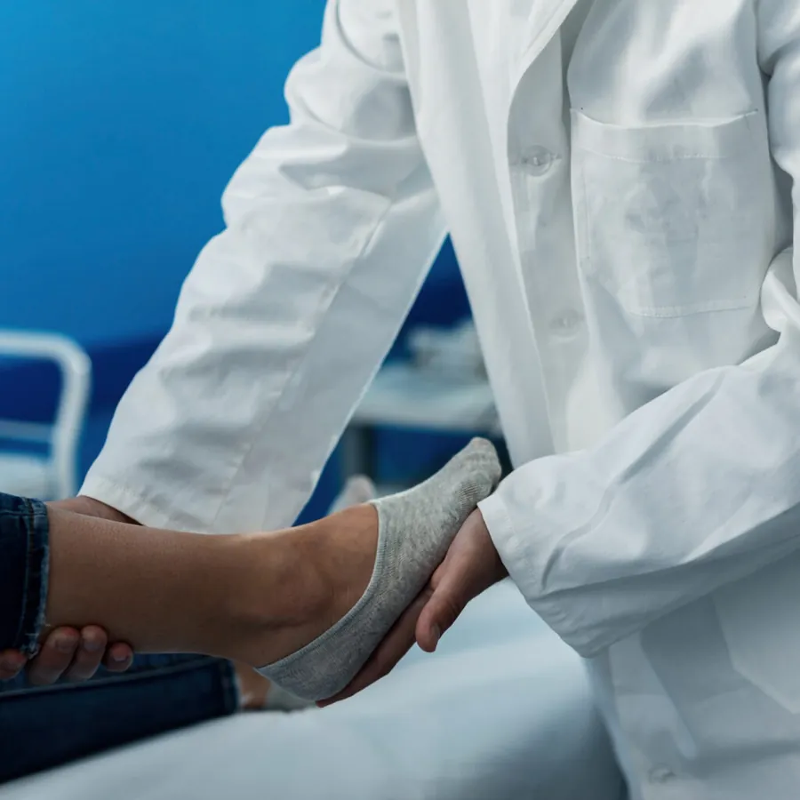
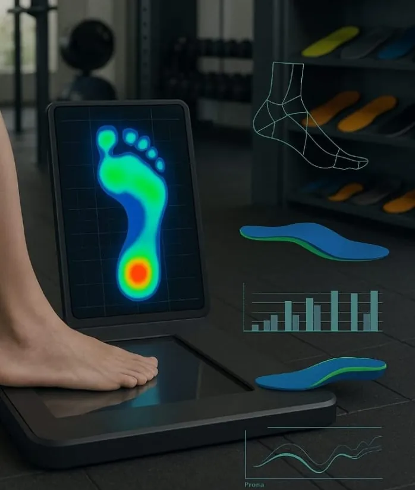
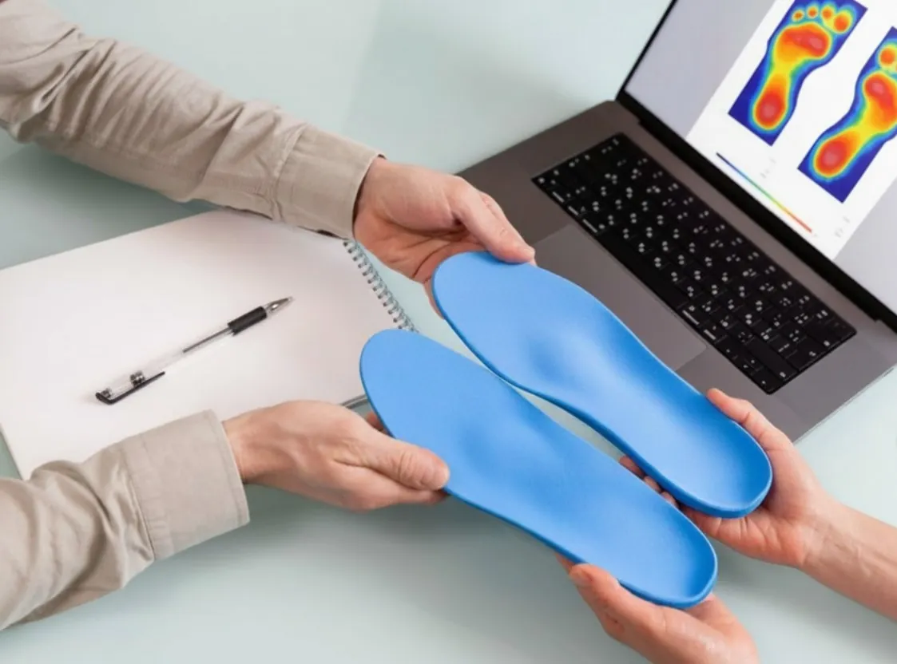
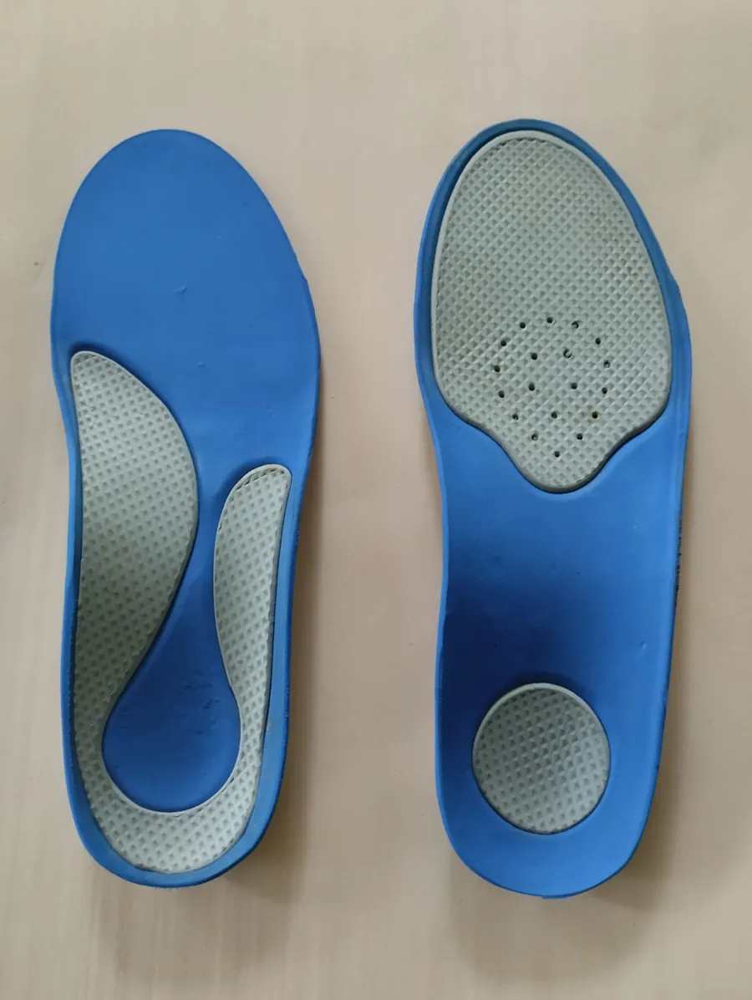
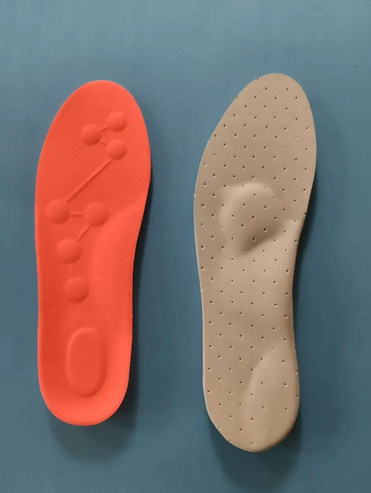

Estudio a domicilio · Lunes a viernes
Medimos cómo pisás.
Fabricamos tus plantillas a medida.
Vamos a tu casa con un equipo computarizado, analizamos tu pisada y diseñamos plantillas ortopédicas pensadas para tu pie. El estudio y el presupuesto no tienen cargo.
- A domiciliovamos a tu casa
- Computarizadomapa de presión
- Sin cargoestudio y presupuesto

Distribuidor de materias primas de Plastazote Argentina
Horario de atención: lunes a viernes de 9 a 17 h

¿Qué es el estudio de la pisada?
Un análisis de cómo se reparte el peso en tus pies.
Es un procedimiento que permite evaluar la salud de tus pies. Con sus resultados confeccionamos las plantillas ortopédicas que mejor se adaptan a tus necesidades.
- Prevenir lesiones corrigiendo apoyos que sobrecargan rodillas, cadera o espalda.
- Caminar mejor, con más estabilidad y amortiguación en cada paso.
- Ganar calidad de vida, en el trabajo, en casa y haciendo deporte.
Somos un equipo dedicado a la ortopedia. Creemos que cada paso es una oportunidad para mejorar tu bienestar.
Cómo funciona
Del escaneo a tus plantillas, sin moverte de tu casa.
- 1
Nos escribís
Por WhatsApp o por el formulario. Coordinamos día y horario de lunes a viernes.
- 2
Vamos a tu casa
Hacemos el estudio de la pisada con equipo digital computarizado. No duele y lleva pocos minutos.
- 3
Diseñamos
Con el mapa de presión definimos el modelo y los materiales adecuados para cada pie.
- 4
Fabricamos y entregamos
Tus plantillas hechas a medida, listas para usar en tu calzado de todos los días.

Equipo de diagnóstico
Tecnología digital para un diagnóstico preciso.
Contamos con máquinas digitales computarizadas que registran en detalle cada pisada. A partir de ese análisis diseñamos y fabricamos plantillas adaptadas a las características de cada persona: mejor ajuste, más confort y un mejor acompañamiento del movimiento natural.
Compromiso
Soluciones que no solo corrigen la postura: potencian el movimiento natural con estabilidad y amortiguación.
Visión
Respetar el movimiento del cuerpo, promoviendo equilibrio, comodidad y bienestar.
Enfoque
Partimos del análisis de la pisada para diseñar con precisión y confort duradero.
Plantillas personalizadas
Para cada pie hay un modelo y un material.
Se adaptan a la vida diaria, al trabajo y a la actividad física. Las hacemos para cualquier edad.



- Vida diariaCaminar y estar de pie sin molestias
- TrabajoJornadas largas con más soporte
- DeporteEstabilidad y absorción de impacto
- Todas las edadesDe chicos a adultos mayores

Materiales
Inspirados en la biomecánica del cuerpo.
Estudiamos el movimiento, la postura y las cargas del día a día. Por eso combinamos materiales de alta calidad que acompañan cada apoyo y cada desplazamiento.
Plastazote
Se adapta a la forma del pie. Somos distribuidores oficiales de la materia prima.
Caucho EVA
Amortiguación liviana y resistente.
Nanogel
Absorbe el impacto en las zonas de mayor carga.
Poliform
Aporta estructura y estabilidad.
El bienestar no es inmediato: se construye desde la base, con equilibrio entre confort, soporte y funcionalidad.
Preguntas frecuentes
Preguntanos lo que necesites.
¿No encontrás tu respuesta? Escribinos por WhatsApp.
¿El estudio de la pisada duele?
No, para nada. Es un estudio no invasivo: solo tenés que apoyar los pies sobre la plataforma.
¿Realizan el estudio a domicilio?
Sí, vamos a tu casa. Coordinamos día y horario por WhatsApp, de lunes a viernes de 9 a 17 h.
¿Lo puede hacer cualquier persona, sin importar la edad?
Sí. Cada plantilla se diseña a partir del estudio de la pisada y de las necesidades de cada pie, para lograr una solución personalizada.
¿Para qué actividades sirven las plantillas?
Para la vida diaria, el trabajo y la actividad física. Acompañan el movimiento natural del cuerpo y mejoran la estabilidad y el confort.
¿Cómo es el proceso desde el diagnóstico hasta la entrega?
Empieza con el análisis de la pisada, sigue con el diseño y la elección de materiales, y termina con la fabricación de tus plantillas a medida.
Contacto
Pedí tu estudio. El presupuesto es sin cargo.
Escribinos y un asesor se pone en contacto con vos para coordinar la visita.
- WhatsApp11 6638-4242
- HorarioLunes a viernes, 9 a 17 h
- ModalidadEstudio a domicilio